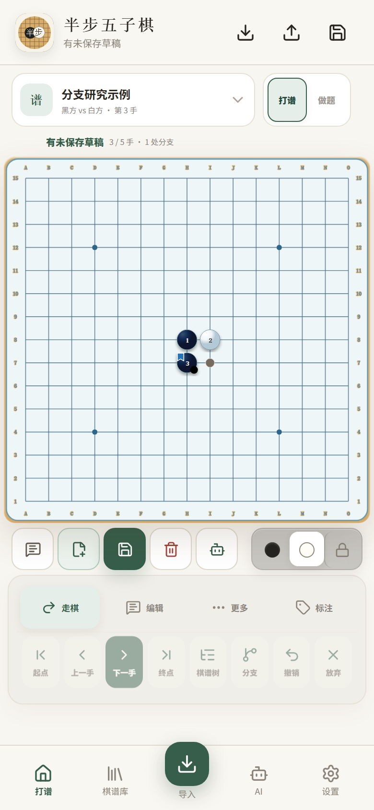
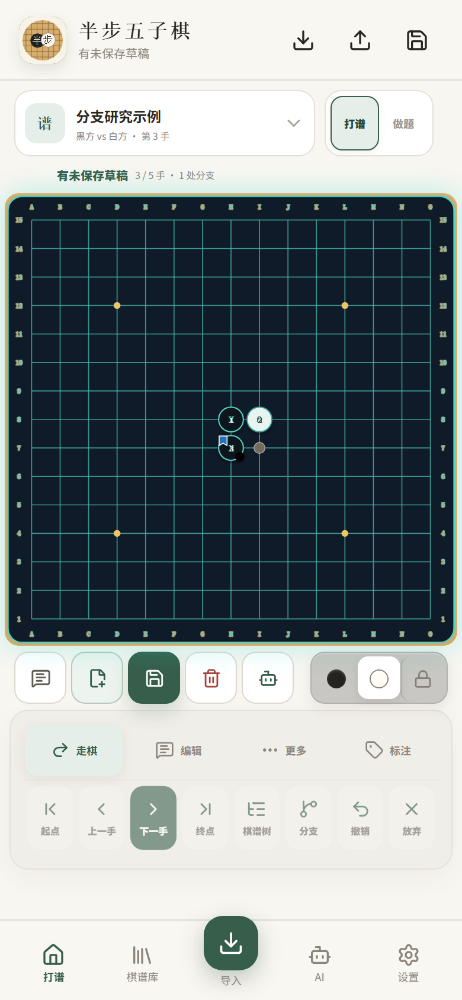
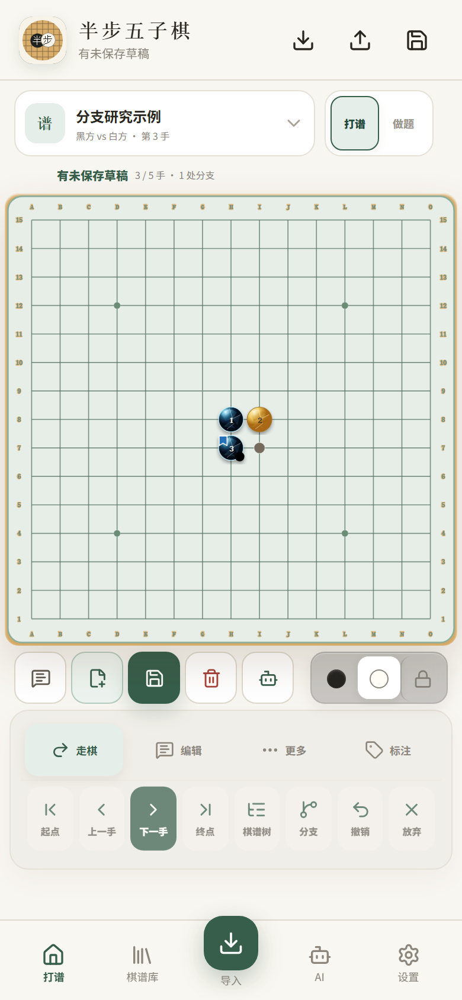
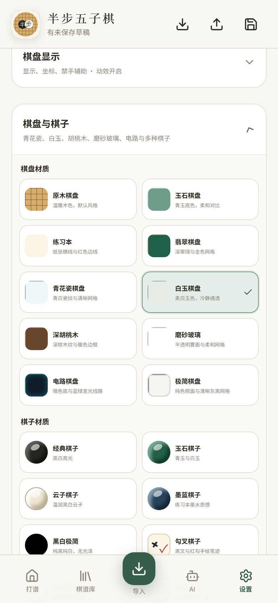

棋盘与棋子，
也可以有自己的风格
棋盘材质和棋子材质可以自由组合，手数、坐标、禁手、书签和最后一步提示会自动适配对比度。
青花瓷青白瓷纹 × 青花棋子



不只是换一个背景
- 10 种棋盘材质，可以单独选择
- 10 种棋子风格，可与任意棋盘组合
- 多套整体主题、音效、动效和字号设置
- 禁手、胜线、AI 推荐点和书签仍保持清晰
原木青花白玉胡桃木电路极简
棋盘材质和棋子材质可以自由组合，手数、坐标、禁手、书签和最后一步提示会自动适配对比度。



